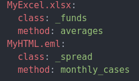

YAML example¶
{kind=link}
An example of the YAML format required to process files using FileProcessor.process().
A fully qualified path + yaml file name should be passed as one of the arguments to FileProcessor.process().
Data blocks in the YAML should have a header name that is the same as the file name of the file being processed. For example, if you are processing a file called MyExcel.xlsx then the header in the YAML should be MyExcel.xlsx (as shown in figure above).
The values assgined to the class and method keys should identify the mixin class and method name of the processor that is used to process the data from MyExcel.xlsx.
Usage example
# identify directory your files are located
path = "C:/Documents/projects/ReportingPlatform/FilesForUpload"
# identify where your YAML is located
proc_yaml = "C:/Documents/projects/ReportingPlatform/processors/processors.yml"
# initialize instance of FileProcessor
processor = FileProcessor(path)
# get list of files in directory
fnames = processor.files()
print(fnames)
OUTPUT
{“C:/Documents/projects/ReportingPlatform/FilesForUpload/MyExcel.xlsx”:[“xlsx”], | “C:/Documents/projects/ReportingPlatform/FilesForUpload/MyHTML.eml”:[“eml”]}
Assuming you want to process data from MyExcel.xlsx:
file = "C:/Documents/projects/ReportingPlatform/FilesForUpload/MyExcel.xlsx"
ext = "xlsx"
# load data from file to DataFrame
df = processor.load(file, ext)
# process data for upload to data warehouse
df = processor.process(file, df, proc_yaml)